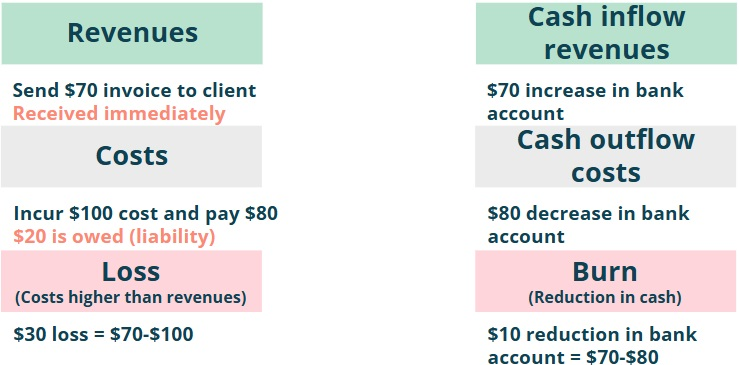
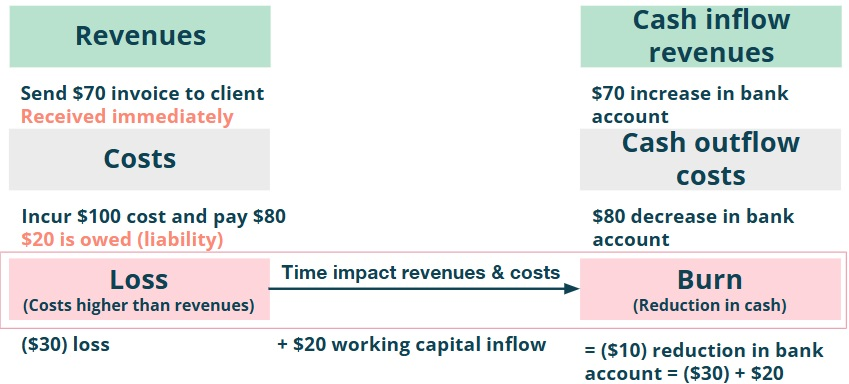

Summary
Something I really love about my job is to communicate with people working in a startup, what our current trajectory is
and help them to visualise what will likely happen in the coming months, quarters and years if we focus on what really matters.
To do this I need to use simple finance terms such as loss, burn and runway and often in the past, people looked at me as if I was speaking Alienish…
After several iterations and testing with people working with me at SafetyWing, I finally managed to convey this in a clear manner.
In this note I am sharing how I have explained these concepts in an easy to understand way to non-Finance colleagues to ensure clear communication about a company’s trajectory.
Step 1: Revenues and Costs
Revenues is money earned from customers (regardless of being received or not). Costs is money spent (regardless of being paid or not).
Step 2: Loss and Profit
Loss is when costs are higher than revenues. Profit is when revenues are higher than costs.
The loss is not a reduction in cash in the bank account because revenues and costs are recorded regardless of being received or paid respectively.
Step 3: Burn and Cash Generation
Burn is when there is a reduction in cash in the bank account. Cash generation is when there is an increase in cash in the bank account.
 Figure 3: Burn and Cash Generation.Step 4: Burn = Loss + Time Impact
Burn is the Loss after considering the time impact of receiving revenues and paying costs. This time impact is also known as working capital flows.
 Figure 4: Burn = Loss + Time Impact.Finally, how to use these concepts to talk about a company’s trajectory?
A start-up is most likely making a loss and therefore it is burning money.
There are several paths it may choose depending on several considerations
(out of scope to go through what those are in this note). A potential path is to ensure that it
is on a path to profitability. Another path is to increase the loss whilst also increasing growth
in order to raise money in the future. Both are valid.
Below is an example of how to explain the company’s trajectory when the focus is to get to profitability.
If you require support or have any questions my contact is: